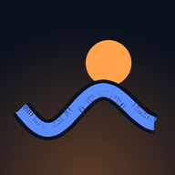

BLUE RONIN
כל הארץ.
שני גלגלים.
דרך אחת.
Blue Ronin היא אפליקציית ניווט שנבנתה לרוכבי אופנועים וקטנועים בישראל. ההשקה בחנויות האפליקציות באביב 2027. הירשמו, ותקבלו הזמנה לפני כולם.
- ניווט יומיומי עם תנועה חיה, ומסלולי סוף שבוע עם עצירות ומזג אוויר.
- תוכנית דלק לפי דגם האופנוע שלכם.
- חירום, זיהוי נפילה ומיקום חי. כלי הבטיחות תמיד בחינם.
אתם ברשימה.
רוצים חודש של Blue Ronin Pro במתנה בהשקה? שלחו את הקישור האישי שלכם לחברים שרוכבים. כששלושה מהם נרשמים, החודש שלכם.